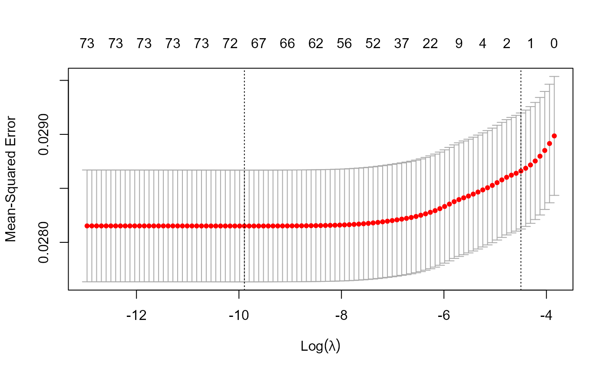
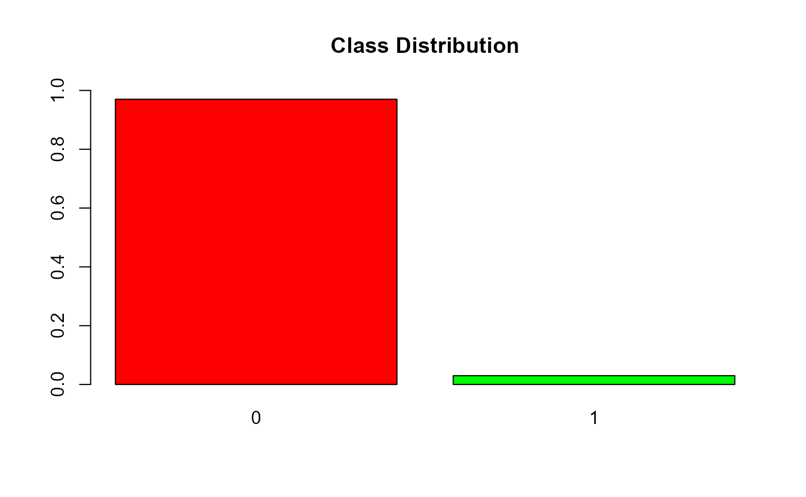
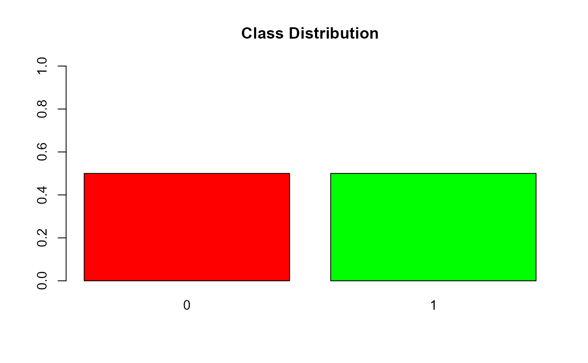

Data Pre-processing
01_data_pre_processing.RmdIn this vignette, we demonstrate how a claims data set can be loaded and pre-processed to adjust for data imbalance.
library(dplyr)
library(lubridate)
library(smotefamily)
library(imbalance)
library(ROSE)
library(coop)
library(caret)
library(radiant.data)
library(glmnet)
options(scipen=999)Preparing Input Data
Loading data and Reducing Dimensionality of character columns
We remove the columns that do not contribute in predicting the fraud.
In columns with too many categories (for ex. medical_service_provider_id) only the top values which contributed the most were considered and remaining categories were taken as one category. This had to be done since encoding such categorical columns would bloat the data set.
## Considering top 20 unique values from certain columns with large unique values
# medical service provider id
mspid <-
claims_dataset %>%
group_by(medical_service_provider_id) %>%
count() %>%
arrange(desc(n))
sum(mspid[1:20, 2]) / sum(mspid[, 2])
#> [1] 0.3289588
"
The code creates data_wo_triggers by copying claims_dataset, replacing medical_service_provider_id values that are not in the top 20 with \"Others\",and removing columns such as insured_id and primary_diagnosis_code.
"
#> [1] "\nThe code creates data_wo_triggers by copying claims_dataset, replacing medical_service_provider_id values that are not in the top 20 with \"Others\",and removing columns such as insured_id and primary_diagnosis_code.\n"
# removing features that do not contribute in predicting fraud
data_wo_triggers <-
claims_dataset %>%
mutate(
medical_service_provider_id =
ifelse(
medical_service_provider_id %in%
mspid[1:20, 1]$medical_service_provider_id,
medical_service_provider_id,
"Others"
)
) %>%
select(
-c(
insured_id,
primary_diagnosis_code,
treatment_start_date,
treatment_end_date,
policy_commencement_date,
policy_termination_date,
claim_reported_date,
claim_count_pa
)
)Feature scaling
Feature scaling is an important step that helps to make sure all the input features are on the same scale.
Some machine learning algorithms assume that all the features have the same scale, and features with big values might be given more importantance during the learning process.
In this data set the columns for the amount, number of days and age were normalized.
"
This code normalizes three columns (approved_allowed_amount, no_of_days_stayed, and patient_age) in the data_wo_triggers data frame. The across function applies the same transformation to multiple columns specified with the .cols argument. The mutate function then applies a function which normalizes the values by subtracting the minimum value from each value and dividing by the range of the column, to each selected column using the .fns argument.
"
#> [1] "\nThis code normalizes three columns (approved_allowed_amount, no_of_days_stayed, and patient_age) in the data_wo_triggers data frame. The across function applies the same transformation to multiple columns specified with the .cols argument. The mutate function then applies a function which normalizes the values by subtracting the minimum value from each value and dividing by the range of the column, to each selected column using the .fns argument.\n"
data_wo_triggers <-
data_wo_triggers %>%
mutate(across(
.cols = c("approved_allowed_amount", "no_of_days_stayed", "patient_age"),
.fns = ~ (.x - min(.x)) / (max(.x) - min(.x))
))Performing One Hot Encoding to Non-numeric columns
In this data set, we had several categorical columns which cannot be directly used in machine learning models, since machine learning models usually require numerical inputs.
Hence one hot encoding is used to convert these categorical columns into numerical format that can be used in machine learning models.
"
The code creates dummy variables for all the columns in the data_wo_triggers data frame using the dummyVars function from the caret package. The resulting dummy variables are then used to replace the original columns in data_wo_triggers using the predict function.
"
#> [1] "\nThe code creates dummy variables for all the columns in the data_wo_triggers data frame using the dummyVars function from the caret package. The resulting dummy variables are then used to replace the original columns in data_wo_triggers using the predict function.\n"
dmy <- dummyVars(" ~ .", data = data_wo_triggers, fullRank = TRUE)
data_wo_triggers <-
data.frame(predict(dmy, newdata = data_wo_triggers))Checking correlations of columns
We identified and removed highly correlated variables.
This ensures that only variables which are most relevant to the target variable are considered.
This also helps in reducing the dimensionality of the data set and improve the model’s performance.
"
The code computes the correlation between variables in the 'data_wo_triggers' data frame, ignoring diagonal and upper triangle elements to avoid duplicate computations. It then converts the correlation matrix to a long format data frame using the 'pivot_longer' function, calculates the absolute correlation value, sorts the correlation values in descending order, and stores the resulting data frame in 'corr'. The filter function removes any correlations equal to zero.
"
#> [1] "\nThe code computes the correlation between variables in the 'data_wo_triggers' data frame, ignoring diagonal and upper triangle elements to avoid duplicate computations. It then converts the correlation matrix to a long format data frame using the 'pivot_longer' function, calculates the absolute correlation value, sorts the correlation values in descending order, and stores the resulting data frame in 'corr'. The filter function removes any correlations equal to zero.\n\n"
corr <- cor(data_wo_triggers)
corr[upper.tri(corr)] = 0
diag(corr) = 0
corr <-
as.data.frame(corr) %>%
rownames_to_column("colnames_1") %>%
pivot_longer(
cols = -colnames_1,
names_to = "colnames",
values_to = "correlation"
) %>%
mutate(correlation_1 = abs(correlation)) %>%
arrange(desc(correlation_1)) %>%
filter(correlation_1 != 0)
"
The code creates a vector drop which has the names of the columns with correlation coefficient greater than 0.7 and it then removes the columns in drop from data_wo_triggers.
"
#> [1] "\nThe code creates a vector drop which has the names of the columns with correlation coefficient greater than 0.7 and it then removes the columns in drop from data_wo_triggers.\n"
#selecting features to drop that are highly correlated
drop <-
as.vector(subset(corr, correlation_1 > 0.7 , select = colnames))
data_wo_triggers <-
data_wo_triggers[,!(names(data_wo_triggers) %in% drop$colnames)]Lasso regression to remove non-influential features in predicting fraud
In this case , since there are a large number of features, and some of them may not be relevant or may have little influence on the target variable, Lasso regression was used
This helps to improve model accuracy, reduce overfitting and identify important features by removing non-influential features.
"
The code uses cross-validation to find the optimal lambda value for a generalized linear model with LASSO regularization, using the glmnet package. It then creates a plot of the mean-squared error for each value of lambda.The code then fits a new model using the optimal lambda value and retrieves the coefficients. It selects the features with non-zero coefficients and orders them by absolute value. If there are more than 30 features with non-zero coefficients, it keeps only the top 30. Finally, it subsets the original data frame to include only the selected features and the target variable 'fraud'.
"
#> [1] "\nThe code uses cross-validation to find the optimal lambda value for a generalized linear model with LASSO regularization, using the glmnet package. It then creates a plot of the mean-squared error for each value of lambda.The code then fits a new model using the optimal lambda value and retrieves the coefficients. It selects the features with non-zero coefficients and orders them by absolute value. If there are more than 30 features with non-zero coefficients, it keeps only the top 30. Finally, it subsets the original data frame to include only the selected features and the target variable 'fraud'.\n"
#perform k-fold cross-validation to find optimal lambda value
cv_model <-
cv.glmnet(data.matrix(data_wo_triggers %>%
select(-c("fraud"))),
data_wo_triggers$fraud,
alpha = 1)
#find optimal lambda value that minimizes test MSE
best_lambda = cv_model$lambda.min
#produce plot of test MSE by lambda value
plot(cv_model)
#find coefficients of best model
best_model <-
glmnet(
data.matrix(data_wo_triggers %>% dplyr::select(-c("fraud"))),
data_wo_triggers$fraud,
alpha = 1,
lambda = best_lambda
)
k = as.matrix(coef(best_model))
k = as.data.frame(k[-1, ])
k = k %>% rownames_to_column("feature")
names(k)[names(k) == 'k[-1, ]'] <- 'coeff'
k = k[k$coeff != 0, ]
k = k[order(abs(k$coeff), decreasing = T), ]
if (nrow(k) > 30)
k = k[1:30, ]
data_wo_triggers = data_wo_triggers[, c(k$feature, "fraud")]Checking for class data Imbalance
Since fraud is a rare occurrence, the proportion of fraud cases is much lesser than that of non fraud cases.
We first check for the presence of such class imbalance in this dataset.
"
The code performs class distribution analysis on the data_wo_triggers dataset. It prints the summary statistics of the fraud variable and plots a bar chart of its distribution.The y-axis is set to a range of 0 to 1.
"
#> [1] "\nThe code performs class distribution analysis on the data_wo_triggers dataset. It prints the summary statistics of the fraud variable and plots a bar chart of its distribution.The y-axis is set to a range of 0 to 1.\n"
summary(data_wo_triggers$fraud)
#> Min. 1st Qu. Median Mean 3rd Qu. Max.
#> 0.00000 0.00000 0.00000 0.02988 0.00000 1.00000
barplot(
prop.table(table(data_wo_triggers$fraud)),
col = rainbow(3),
ylim = c(0, 1),
main = "Class Distribution"
)
There is evidence to suggest the existence class data imbalance
Splitting Train and Test set
Splitting a dataset into a training set and a test set is crucial to evaluate the performance of a model on new, unseen data.
The training set is used to train the model, while the test set is used to evaluate its performance.
"
The code creates data_wo_triggers_train and data_wo_triggers_test by randomly sampling 70% of the rows in data_wo_triggers as the Training Set and the remaining 30% as the Test Set. The seed is set to 123 to ensure reproducibility.
"
#> [1] "\nThe code creates data_wo_triggers_train and data_wo_triggers_test by randomly sampling 70% of the rows in data_wo_triggers as the Training Set and the remaining 30% as the Test Set. The seed is set to 123 to ensure reproducibility.\n"
# randomly split data in r
set.seed(123)
TrainingIndex = sample(seq_len(nrow(data_wo_triggers)), size = 0.7 * nrow(data_wo_triggers))
data_wo_triggers_train <-
data_wo_triggers[TrainingIndex, ] # Training Set
data_wo_triggers_test <-
data_wo_triggers[-TrainingIndex, ] # Test SetAdjusting data for imbalance
As seen above, there is a class imbalance in this dataset.
Adjusting the data for the imbalance is necessary in order to ensure that the machine learning models are not biased towards the majority class.
We used oversampling methods to handle the data imbalance to ensure that there is no loss of data.
In brief about the methods used:
ADASYN(Adaptive Synthetic Sampling) generates synthetic data points for the minority class in imbalanced datasets, creating more samples in underrepresented regions to improve model performance.
SMOTE (Synthetic Minority Over-sampling Technique) generates synthetic data points for the minority class in imbalanced datasets by interpolating between minority class examples to create new samples.
MWMOTE(Majority Weighted Minority Oversampling Technique) is a modification of SMOTE that aims to address the issue of noisy examples by adding a weighting factor to each minority class example based on its level of noise.
ROSE (Random Over-Sampling Examples) generates synthetic data points for the minority class by randomly selecting a sample from the minority class.
"
A new dataset newData is created using the ADASYN algorithm with data_wo_triggers_train as input. The resulting dataset is assigned to adasyn_wo_triggers_train, and the number of fraud and non-fraud observations is printed.
Similarly, adasyn_wo_triggers_test is created using the ADASYN algorithm with data_wo_triggers_test as input. The resulting dataset is assigned to adasyn_wo_triggers_test, and the number of fraud and non-fraud observations is printed.
Similary it is done using SMOTE,MWMOTE and ROSE.
"
#> [1] "\nA new dataset newData is created using the ADASYN algorithm with data_wo_triggers_train as input. The resulting dataset is assigned to adasyn_wo_triggers_train, and the number of fraud and non-fraud observations is printed.\n\nSimilarly, adasyn_wo_triggers_test is created using the ADASYN algorithm with data_wo_triggers_test as input. The resulting dataset is assigned to adasyn_wo_triggers_test, and the number of fraud and non-fraud observations is printed.\n\nSimilary it is done using SMOTE,MWMOTE and ROSE.\n"ADASYN
newData <-
ADAS(X = data_wo_triggers_train,
data_wo_triggers_train$fraud,
K = 5)
adasyn_wo_triggers_train <-
newData$data %>%
dplyr::select(-c("class")) %>%
mutate(fraud = as.factor(fraud))
adasyn_wo_triggers_train %>%
group_by(fraud) %>%
summarise(count = n()) %>%
print()
#> # A tibble: 2 × 2
#> fraud count
#> <fct> <int>
#> 1 0 74126
#> 2 1 74110
adasyn_wo_triggers_test <-
ADAS(X = data_wo_triggers_test,
data_wo_triggers_test$fraud,
K = 5)$data %>%
dplyr::select(-c("class")) %>%
mutate(fraud = as.factor(fraud))
adasyn_wo_triggers_test %>%
group_by(fraud) %>%
summarise(count = n()) %>%
print()
#> # A tibble: 2 × 2
#> fraud count
#> <fct> <int>
#> 1 0 31804
#> 2 1 31830SMOTE
nrow(data_wo_triggers_train) / sum(data_wo_triggers_train$fraud)
#> [1] 33.10307
smote_wo_triggers_train <-
SMOTE(
data_wo_triggers_train,
data_wo_triggers_train$fraud ,
K = 5,
dup_size = 18
)$data %>%
dplyr::select(-c("class")) %>%
mutate(fraud = as.factor(fraud))
smote_wo_triggers_train %>%
group_by(fraud) %>%
summarise(count = n()) %>%
print()
#> # A tibble: 2 × 2
#> fraud count
#> <fct> <int>
#> 1 0 74126
#> 2 1 43871
nrow(data_wo_triggers_test) / sum(data_wo_triggers_test$fraud)
#> [1] 34.33753
smote_wo_triggers_test <-
SMOTE(
data_wo_triggers_test,
data_wo_triggers_test$fraud ,
K = 5,
dup_size = 18
)$data %>%
dplyr::select(-c("class")) %>%
mutate(fraud = as.factor(fraud))
smote_wo_triggers_test %>%
group_by(fraud) %>%
summarise(count = n()) %>%
print()
#> # A tibble: 2 × 2
#> fraud count
#> <fct> <int>
#> 1 0 31804
#> 2 1 18126MWMOTE
mwmote_wo_triggers_train <-
mwmote(
dataset = data_wo_triggers_train,
numInstances = nrow(data_wo_triggers_train) - 2 * sum(data_wo_triggers_train$fraud),
classAttr = "fraud",
kNoisy = 5,
kMajority = 3,
kMinority = 1,
threshold = 5,
cmax = 2,
cclustering = 3
) %>%
bind_rows(data_wo_triggers) %>%
mutate(fraud = as.factor(fraud))
mwmote_wo_triggers_train %>%
group_by(fraud) %>%
summarise(count = n()) %>%
print()
#> # A tibble: 2 × 2
#> fraud count
#> <fct> <int>
#> 1 0 105930
#> 2 1 75080
mwmote_wo_triggers_test <-
mwmote(
dataset = data_wo_triggers_test,
numInstances = nrow(data_wo_triggers_test) - 2 * sum(data_wo_triggers_test$fraud),
classAttr = "fraud",
kNoisy = 5,
kMajority = 3,
kMinority = 1,
threshold = 5,
cmax = 2,
cclustering = 3
) %>%
bind_rows(data_wo_triggers) %>%
mutate(fraud = as.factor(fraud))
mwmote_wo_triggers_test %>%
group_by(fraud) %>%
summarise(count = n()) %>%
print()
#> # A tibble: 2 × 2
#> fraud count
#> <fct> <int>
#> 1 0 105930
#> 2 1 34113ROSE
#chose seed 100
#The N variable is the total number that will be generated
#N should essentially be sum of both fraud and non fraud
rose_wo_triggers_train <-
ovun.sample(
fraud ~ . ,
data = data_wo_triggers_train,
method = "over",
N = (
nrow(data_wo_triggers_train) - sum(data_wo_triggers_train$fraud)
) * 2,
seed = 100
)$data %>%
mutate(fraud = as.factor(fraud))
table(rose_wo_triggers_train$fraud)
#>
#> 0 1
#> 74126 74126
barplot(
prop.table(table(rose_wo_triggers_train$fraud)),
col = rainbow(3),
ylim = c(0, 1),
main = "Class Distribution"
)
#chose seed 100
#The N variable is the total number that will be generated
#N should essentially be sum of both fraud and non fraud
rose_wo_triggers_test <-
ovun.sample(
fraud ~ . ,
data = data_wo_triggers_test,
method = "over",
N = (
nrow(data_wo_triggers_test) - sum(data_wo_triggers_test$fraud)
) * 2,
seed = 100
)$data %>%
mutate(fraud = as.factor(fraud))
table(rose_wo_triggers_test$fraud)
#>
#> 0 1
#> 31804 31804
barplot(
prop.table(table(rose_wo_triggers_test$fraud)),
col = rainbow(3),
ylim = c(0, 1),
main = "Class Distribution"
)
In this vignette, We pre-processed the claims data set and generated train and test data sets that were adjusted for data imbalance using the methods ADASYN,SMOTE,MWMOTE,ROSE. We will use these in other vignettes to fit machine learning models for fraud classification